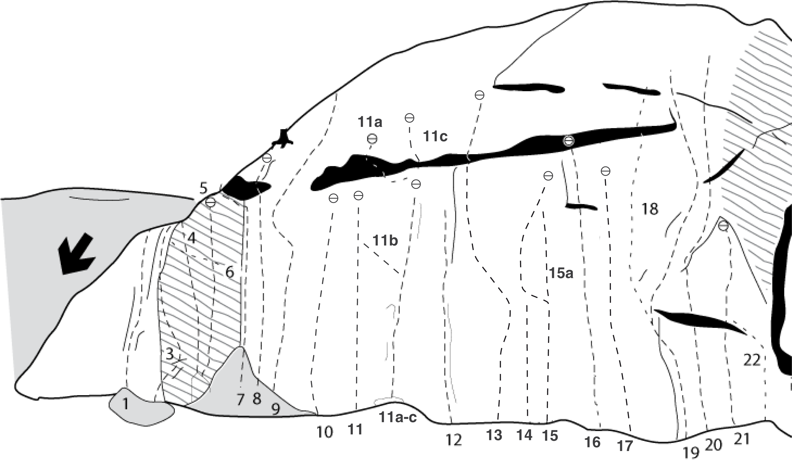
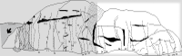
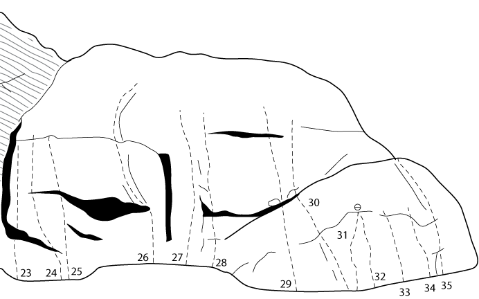

Dödskalleberget
Lat: 59.19512
Long: 18.40751
[[Bild:Dodskalleberget.jpg|thumb|400px|right|Dödskalleberget i kvällsol. Foto:
Per Lindh
]]
__TOC__
Allmänt
Mycket hög och imponerande klippa med öppet, soligt och vackert läge. En av Stockholms bästa klippor för långa leder i 7a-8a registret. Bultningen var tidigare av äventyrligt slag, men de flesta lederna har nu bultats om och är säkra att klättra.
Miljö
På sommaren blir klippan olidligt varm. Fungerar bäst på tidig vår och sen höst, och ibland även fina vinterdagar! Den högra delen av stora väggen är hyfsat regnsäker. Gångavstånd till badklippor.
Vägbeskrivning
Dödskalleberget
Kör Tyresövägen ut på Tyresöhalvön och fortsätt rakt fram en bra stund på den kurviga vägen tills du kommer till en liten båthamn. Sväng höger och fortsätt ännu en bra bit längst en backig väg. Efter en skarp nedförsbacke ta höger på Dyviksuddsvägen. Klippan kan ses på höger sida efter ett par hundra meter. Parkera på parkeringen ca 150 m efter klippan. Parkeringen är välanvänd så lämna plats för andra bilar. Det nyinrättade naturreservatet Dyviks lövängar, ligger kring klippan, och till detta reservat finns numera skyltning. Klippan är en del av reservatet.
Access
Ständigt hotat av klätterförbud. Var diskreta, skräpa inte ned och håll en låg profil. Berget ingår i naturreservatet Dyviks lövängar. Parkera endast på parkeringsplatsen ca 150m efter klippan och ställ bilen så att fler bilar får plats.
Bultkommittén i Stockholm nådde under 2012 en överenskommelse med Tyresö kommun, som förvaltar naturreservatet, om ombultningar av leder. Ombultningar är endast tillåtet under vissa förutsättningar och varje åtgärd måste godkännas av kommunen i ett skriftligt förfarande.
Leder

Lilla väggen till vänster
Vertikalt till svagt överhängande
- 1
- En byrå underifrån
- 5
- behöver inte repeteras enligt fa
- 2
- Adios stupido
- 6+
- Dåligt säkrad i början
- 3
- Asers arête
- 6c
- Fantastisk klättring på den luftiga arêten. Ombultad 2013.
- 4
- Skriet i vildmarken
- 7b+
- Ombultad 2013.
- 5
- Mio
- 7b+
- En av stockholms pärlor. Tung väggklättring.
- 6
- Indianerna kommer
- 7+
- Traverserar lilla väggen från v till höger.
Stora väggen
Svaklättring på vänstra delen, vertikalt till svagt överhängande högra delen
- 7a
- Vingel
- 6+
- Start i En skänk från ovan sedan vänster
- 8
- Gammelgäddan
- 6a+
- Går genom det lilla taket med dragning åt höger på slutet. Ombultad 2013.
- 9
- Trygghet utan grund
- 5+/6-
- Spännande, äventyrlig led uppför hela väggen. Säkras med små kilar, avslingade flak och friends på toppen.
- 10
- Gelatinerad sperma
- 6b
- Ombultad 2013. Leden slutar numera vid ett eget ankare under taket. Originalutsteget, som fortsatte till toppen, är svårsäkrat och har en hel del lösa block.
- 11
- Ahlgrens bilar
- 6b+
- Känslig och inte helt enkel. Går till ett ankare under taket. Ombultad 2013.
- 11a
- Devil
- 7b
- Spektakulär led som går genom taket. Ombultad 2013.
- 11b
- Ahlgrens pygméer
- 5c
- Börja i Devil/Inget för pygméer och snedda sedan vänster och in i Ahlgrens bilar. Ombultad 2013.
- 11c
- Inget för pygméer
- 7a+
- Passagen genom taket är lite lös och aningen ogästvänlig. Ankare under taket, om man avslutar leden här blir den klart lättare.
- 12
- Magnus led
- 7-
- Start i en diederformation
- 14
- Guran
- 6c+
- Svaled som på mitten av berget går in i Diana. Ombultad i oktober 2012.
- 15
- Diana
- 6c+
- Fin led som kan bita ifrån. Ombultad i oktober 2012. Har ett eget ankare.
- 15a
- Diana direkt
- 7a+
- På mitten av Diana, där denna gör en krumbukt åt vänster, går leden rakt upp till ankaret. Ombultad i oktober 2012.
- 16
- Holidays in eden
- 7c+
- Lång teknisk och ihållande led. Ombultad i oktober 2012.
- 17
- Mr Magister
- 7c+/8a
- Krimpfest utan vila. Ombultad hösten 2011.
- 18a
- Mr Walker
- 7c
- Upp genom taket. Ombultad i oktober 2012.
- 18b
- Mr Walker (variant)
- 7b+
- Ankare under taket. Ombultad i oktober 2012.
- 19
- Fantomen
- 7b+
- Startar som Mr Walker men fortsätter rakt upp efter diedern. Sedan genom takets högra kant. Ombultad i oktober 2012.
- 20
- Dragos
- 7b+
- Till höger om Fantomen. Ombultad i oktober 2012.
- 21
- Tio Tigrar
- 7c
- Känner du dig stark? Ombultad i oktober 2012.
- 22
- Hero
- 7c
- Går ihop med Tio Tigrar. Ombultad i oktober 2012.


Högra väggen
- 25
- Den stygga björken
- 7+/8-
- Bakom björken
Apväggen
- 32
- En liten psykiatrisk undersokning
- 7+
-
- 34
- Slaktmiddagangest
- 7/7+
-
Kategori:Trad
Kategori:Mix
Kategori:Sport
Kategori:Vertikalt
Kategori:Överhäng
Kategori:Sva
Kategori:Stockholm
Kategori:Tyresö
Copyright (C) Permission is granted to copy, distribute and/or modify this document under the terms of the GNU Free Documentation License, Version 1.3